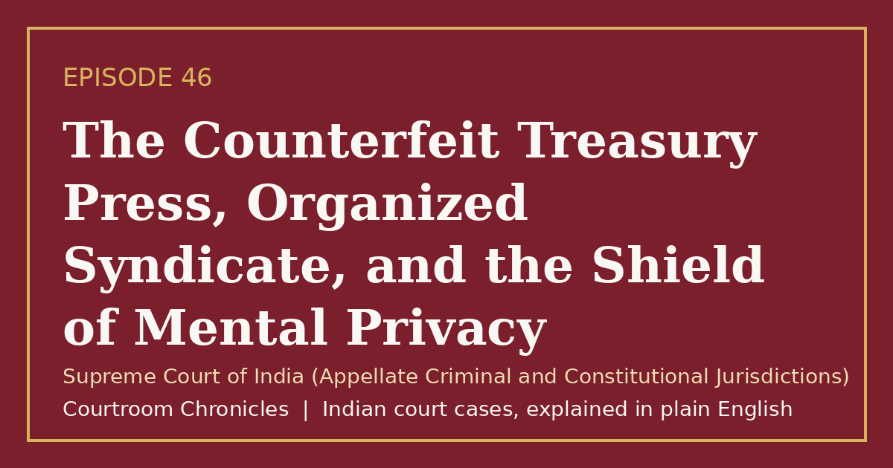

Episode 46
The Counterfeit Treasury Press, Organized Syndicate, and the Shield of Mental Privacy
A nationwide counterfeit revenue syndicate prompted historic legal reckonings over organized crime statutes and the constitutional boundaries of involuntary interrogation.
Criminal lawCriminal procedureConstitutional lawPrivacyFundamental rights
#CourtroomChronicles#IndianLaw#FinancialCrime#RightToPrivacy#ConstitutionalLaw#ForensicScience#SupremeCourtOfIndia

Listen
- Court
- Supreme Court of India (Appellate Criminal and Constitutional Jurisdictions)
- Date of Landmark Decisions
- October 12, 2007 (Organized Crime Plea) and May 5, 2010 (Constitutional Invalidation of Involuntary Narco-Analysis)
- Nature of Syndicate
- Nationwide commercial manufacturing and distribution of counterfeit non-judicial revenue stamp papers
- Instrumentalities Deployed
- Decommissioned government security printing presses, specialized inks, and security watermark paper
- Penal Consequence
- Multiple rigorous life sentences, record financial fines, and complete transition to digital revenue certification
Key takeaways
- The state cannot forcibly inject chemical substances or conduct neurological tests on suspects without voluntary informed consent.
- Organized syndicates that infiltrate sovereign revenue mechanisms face severe penal accountability and sweeping financial asset confiscation.
- The monumental revenue forgery prompted India to modernize its property documentation through tamper-proof electronic stamping systems.
The case in brief
When an ambitious counterfeiter acquired decommissioned security printing presses from an official government mint, he established a sophisticated parallel revenue apparatus across multiple states. Exploiting severe nationwide shortages of non-judicial stamp papers following economic expansion, the syndicate manufactured high-denomination revenue papers that were virtually indistinguishable from authentic treasury issues, penetrating banking networks, real estate registries, and corporate transactions.
The multi-crore criminal enterprise operated through dozens of regional branch offices, hundreds of commercial bank accounts, and extensive administrative corruption. Following high-profile police interceptions and federal investigative consolidation, specialized anti-gang statutes were invoked to dismantle the financial network, leading to historic plea convictions and unprecedented criminal fines.
The investigation sparked a landmark constitutional reckoning when law enforcement agencies attempted to extract evidence through involuntary narco-analysis, polygraph tests, and brain mapping. The Supreme Court decisively ruled that involuntary physical and neurological intrusions violate the fundamental privilege against self-incrimination and infringe personal liberty and mental privacy under the Constitution, establishing that scientific efficiency cannot override fundamental constitutional protections.
Timeline
- Syndicate Origin
The syndicate secures commercial vendor licensing and procures decommissioned government mint printing equipment.
- Interception in Western India
Police seize vehicular consignments of forged revenue stamp papers, unraveling a multi-state network.
- Arrest of the Kingpin
Specialized police detectives apprehend the syndicate leader outside a religious shrine in northwestern India.
- Organized Crime Sentencing
A special organized crime tribunal sentences syndicate leaders to rigorous imprisonment and historic monetary fines.
- Constitutional Privacy Ruling
The Supreme Court declares the involuntary administration of narco-analysis and lie detector tests unconstitutional.
What the court decided
Special tribunal convictions and multi-crore penal fines affirmed under organized crime statutes; subsequent Constitution Bench ruling strictly invalidating involuntary narco-analysis, brain mapping, and polygraph tests as unconstitutional violations of Articles 20(3) and 21.
Key holdings
- Voluntary pleas of guilt recorded under specialized organized crime enactments carry conclusive evidentiary validity when procedural safeguards are scrupulously observed.
- Compulsory administration of chemical truth serums or neurological tests violates the absolute constitutional protection against compelled self-incrimination.
- The fundamental right to privacy encompasses mental privacy, personal autonomy, and the right to remain silent during custodial investigation.
- Subsequent material discoveries made pursuant to voluntary statements are admissible only when physical evidence is independently discovered without testimonial coercion.
Legal principles
Privilege Against Self-Incrimination Nemo tenetur seipsum accusare
No person accused of an offense can be compelled by the state to provide testimony or evidence against their own interest.
In this case: The court held that drugging an accused person to elicit subconscious disclosures constitutes impermissible physical and psychological compulsion.
Right to Mental Privacy and Bodily Autonomy
The constitutional guarantee of personal liberty protects an individual's private thoughts and physical integrity from intrusive state intrusion.
In this case: The bench recognized that forced psychiatric or neuro-scientific procedures infringe the core dignitary protections secured under the fundamental right to life.
Strict Liability of Organized Crime Enterprises
Statutory frameworks targeting continuing unlawful syndicates permit enhanced sentencing and financial forfeiture to neutralize systemic corruption.
In this case: The special courts applied stringent organized crime provisions to dismantle the corporate apparatus and confiscate the proceeds of the illicit printing empire.
The law then and now
Because the criminal offenses and trials took place between 1994 and 2007, the proceedings were governed by the Indian Penal Code, 1860, the Code of Criminal Procedure, 1973, and regional organized crime legislation prior to the enactment of the Bharatiya Sanhitas.
Left: the law applied to this case. Right: the matching provision today (the new criminal codes apply only to offences on or after 1 July 2024).
Re-enacted maintaining life imprisonment or rigorous imprisonment up to ten years alongside heavy monetary fines for forging government stamps.
Re-enacted substantive criminal conspiracy liability for agreements to execute illicit multi-state enterprises. See all 10 episodes on this provision →
Modernized confession recording provisions introducing mandatory audio-video electronic recording safeguards. See all 2 episodes on this provision →